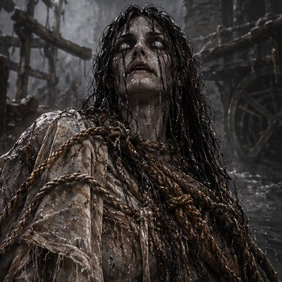

1 · Heute


Zahlen ohne Herkunft. „Gift wirkt: 14“ – von welchem Talent? „KRITISCH“ – wie oft war das jetzt? Man sieht Ereignisse, keine Muster. Deshalb tippt man auf Überspringen.
2 · Namen statt Zahlen
NachhallJedes Ereignis sagt, woher es kommt. „Nachhall“ ist dein Schlüsselstein. „Verbrennung“ auch. Zum ersten Mal siehst du im Kampf, was du am Brett entschieden hast.
Kostet keine Höhe – der Name steht über dem Bild, nicht daneben. Im Log steht er als Vorsatz vor der Zeile, die ohnehin da war.
3 · Namen + mitlaufende Bilanz
NachhallZauber 61 % deines Schadens
Jede Zahl zählt hoch, während du zusiehst, und zuckt, wenn sie auslöst. Das beantwortet genau deine Fragen: wie oft kritisch, wie oft löst es aus, wie viel macht das Gift.
Die letzte Zeile ist die wichtigste. „Zauber 61 % deines Schadens“ steht heute erst im Bericht nach dem Kampf. Wer sie während des Kampfes sieht, entscheidet beim nächsten Brett-Punkt anders.
Das Log wird kürzer – die Bilanz nimmt ihm zwei Zeilen weg. Das ist der Preis, und ich halte ihn für richtig: eine Zeile mehr Log sagt weniger als eine Zahl, die mitwächst.
4 · Auf dem SE (375 × 667)
NachhallHier entscheidet es sich. Auf dem kleinen Schirm bleiben vier Kacheln und drei Log-Zeilen. Die Prozent-Zeile fällt weg (wie `.prep.tight` es längst macht).
Offen: ob drei Zeilen Log noch genug sind, um dem Kampf zu folgen. Das würde ich messen, nicht schätzen.